Items in the game can be acquired in two ways: from item boxes ("?" blocks) or from
Bonus Wheel spins. When collecting an item from an item box, it may be used instantly
or it may be stored for later use, depending on the item. Items that are acquired by
spinning the Bonus Wheel will always become a stored item at the beginning of each game
you play, until they are overridden by another wheel spin or are cleared via the options
menu.
Throwable - These items cannot be gathered like
other items, but you can pick them up when they are not moving by holding the Turbo
button. When you release the button, you will throw the item.
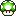 1UP Mushroom
Type: Instant
In game modes where the score is a measure of lives, frags, Goomba kills, etc., this item
will grant you an extra life, frag, lap, etc. In all other modes, this item will grant you
10 extra points.
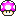 2UP Mushroom
Type: Instant
Catching this pretty pink 'shroom counts as having collected 2 1UP Mushrooms (so you will
receive either 2 extra lives, frags, etc., or 20 points towards the goal, with the exception
of Race and Star modes in which this item still grants only 1 extra point). However, it moves
a little faster than a 1UP.
3UP Mushroom
Type: Instant
Grabbing a blue mushie counts as having collected 3 1UP Mushrooms (so you will receive either
3 extra lives, frags, etc., or 30 points towards the goal, with the exception of Race and Star
modes in which this item still grants only 1 extra point). However, it moves quite a bit faster
than a 1UP.
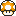 5UP Mushroom
Type: Instant
Snagging this golden treat counts as having collected 5 1UP Mushrooms (so you will receive
either 5 extra lives, frags, etc., or a whopping 50 points towards the goal, with the exception
of Race and Star modes in which this item grants only 2 extra points). However, it is the
fastest-moving of all the mushrooms, as well as the rarest item in the game!
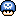 Poison Mushroom
Type: Instant
Upon collecting this item, unless you are invincible, you will die. This will have the same
effect on your score as hitting spikes or lava.
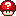 Mystery Mushroom
Type: Instant
When you grab this item, everyone on the map will immediately switch positions and stored items
with each other. The actual switching is random, so you could swap with Player 2 one time and
with Player 3 the next. If whoever takes your place dies within one second of getting there,
you will be credited with a kill. Additionally, whoever's place you take, you will also take
their stored item in place of yours, even if they didn't have anything (in which case you will
then have nothing stored). The effect used when players switch can be changed in the Options
menu under Item Settings.
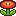 Fire Flower
Type: Weapon
This item gives you the ability to shoot deadly fireballs with the turbo button. Fireballs
bounce along the ground for a while until they disappear, but they will also disappear if
they hit a wall or another player.
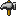 Hammer
Type: Weapon
This item will give you the ability to throw hammers. Hammers travel in an
arc whose lateral distance is determined by how fast you are moving, and as a result,
hammers are not very easy to aim - but they can give you a big advantage over players
who are trying to jump you if you can use them well.
Boomerang
Type: Weapon
This item gives you the ability to shoot boomerangs. Using the default behavior, Boomerangs
will travel ahead in a long arc before turning around and going in a straight line until
they disappear. However, there are other trajectory types you can choose, under the Options
menu (see below), if you don't like the default. Boomerangs, like hammers, can be shot through
solid walls.
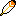 Feather
Type: Weapon
When you grab this item, you will don a cape and be granted the ability to jump a second time
in midair! The second jump will be weaker than the first, though. This item is great for
reaching high ledges, items, and targets. (Note that even though the Feather doesn't allow
you to shoot anything, it still counts as a Weapon, so you can't have both a Feather and a
Fire Flower, for example.)
Invincibility Star
Type: Collectable
Gives the player invincibility for 10 seconds. During this time, the player can walk on
spikes/lava, stay above the map as long as they want, continually fall without burning
up, and kill other players just by touching them.
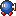 Bob-Omb
Type: Collectable
This item turns you into a Bob-Omb. Pressing the turbo button causes you to explode and
kill players around you. However, you can only explode once before you return to normal
again. If you kill a player who is a Bob-Omb, and you aren't one already (which includes
if you were one and just exploded), you will steal their Bob-Omb status.
 Clock
Clock
Type: Stored
When you use this item, all players that are not on your team will be slowed down
and will only be able to jump 2 blocks high. These effects last for 10 seconds.
Bullet Bill
Type: Stored
When this item is used, Bullet Bills of your team color will fire in from the sides of the
screen for about 5 seconds. Players on the opposing team must dodge or jump on the Bullet
Bills to avoid death. Additionally, If two players' Bullet Bills collide, they will explode.
This explosion will kill anyone it touches, including the owners of the Bullet Bills.
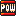 POW Block
Type: Stored
When this item is used, the screen shakes for about half a second and any players that
touch the ground during this time are killed. You should watch for when an opponent
uses one of these, and make sure you make a big jump so you don't die.
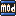 MOd Block
Type: Stored
This item acts exactly like the POW block, except that when you use it, instead of killing
players on the ground, you kill players in the air. So, when an opponent is
using one of these, you should stay on the ground for a bit to avoid getting killed.
Green Shell
Type: Throwable
When this item is thrown or stomped on, it will start bouncing around the map. It can be
jumped a second time to stop it. It will kill the first person it hits while it is moving,
and will disappear afterwards. It will also disappear if it stays moving for too long
without hitting anyone. You can also kill Green Shells with projectile weapons such as fireballs.
Green shells will not disappear by themselves if they are not moving or if someone is carrying
them.
Red Shell
Type: Throwable
This item is exactly like a Green Shell except for one detail: it doesn't stop when it hits
one player, and will instead plow through as many things as are in its way until its time
runs out or until someone shoots it.
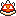 Spiny Shell
Type: Throwable
This item is exactly like the Red Shell, except that it is covered in spikes and so it
can't be jumped on to stop it once it's going. It can still be shot, though.
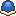 Buzzy Shell
Type: Throwable
This item is exactly like the Red Shell, except that it is immune to projectile weapons.
It can still be jumped, though.
A couple notes about Shells
When two shells collide, if they are both the same "strength" (i.e. if they are both green
or if they are both multikilling shells) then both of them will die. Otherwise, only the
green shell will die (the multikilling shell will kill it and keep going). Also, when you
win a shell from the Bonus Wheel, it will become a stored item. When you use it, if you are
holding the Turbo button, the shell will appear in your hands so you can kick it; otherwise,
it will appear in front of you and start moving right away.
 Frenzy
Frenzy